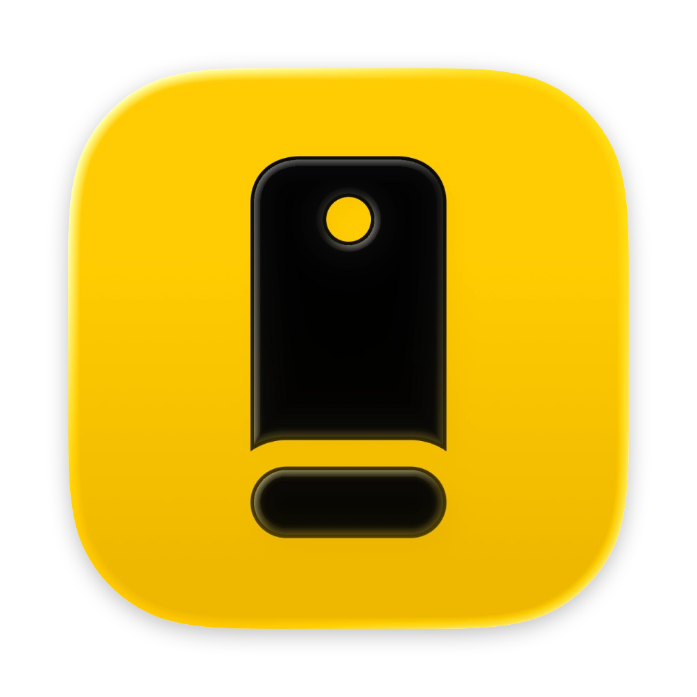
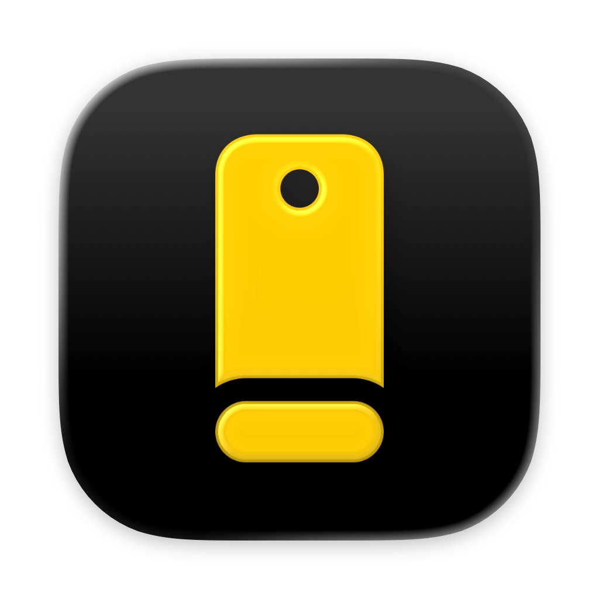
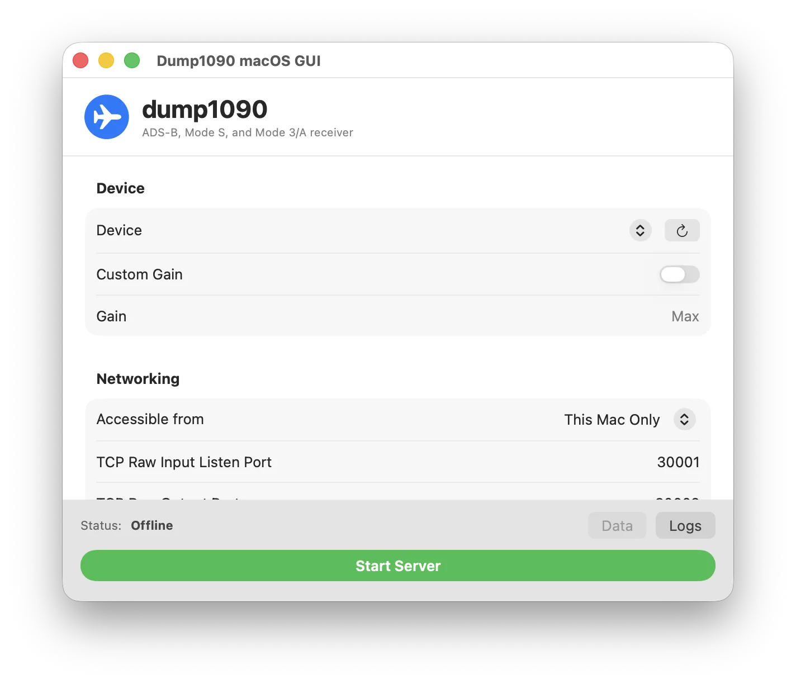
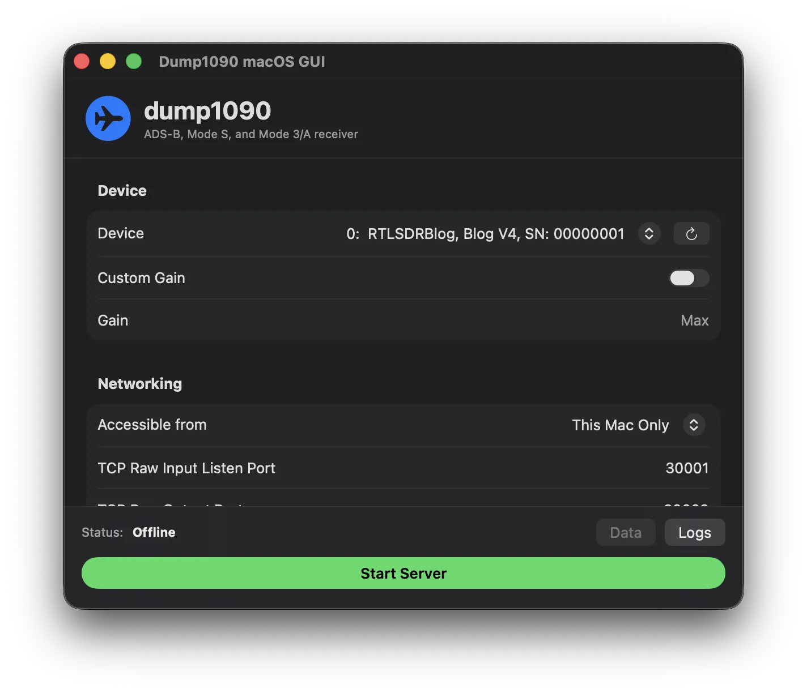

Dump1090 macOS GUI
ADS-B, Mode S, and Mode 3/A receiver for macOS


Download Nightly Build
macOS 13.0 or later • Apple Silicon only
RTL-SDR Support
Connect your RTL-SDR dongle and start receiving aircraft signals
Easy Configuration
Simple interface to configure device settings, gain, and network options

Network Streaming
Stream data over TCP for use with other ADS-B applications
Inspired by mxswd/dump1090-mac-app
Built with dump1090 by MalcolmRobb, librtlsdr, and libusb